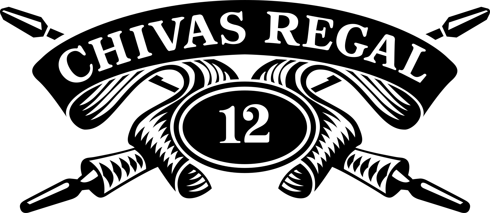
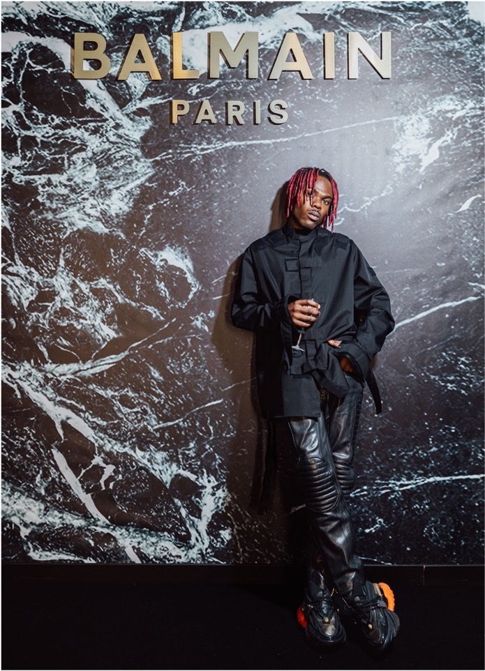
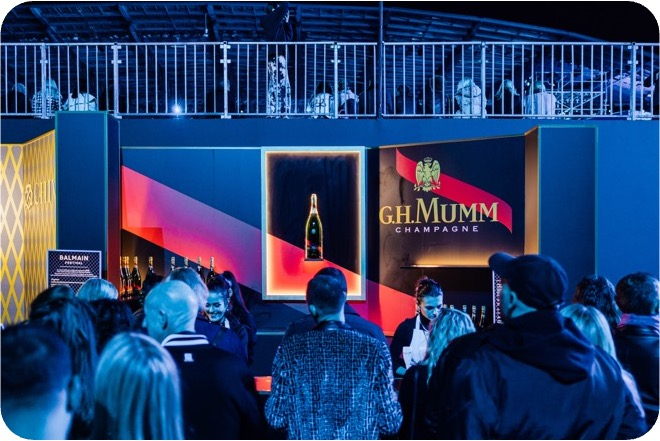

Objectif
Retour aux références
Balmain Paris x Chivas · 2022
Balmain Paris x Chivas - Fashion Week Paris
Expérience VIP, mixologie luxe, activation de marque
Projet réalisé dans le cadre du parcours professionnel antérieur de Lucie Ramon.


Balmain Paris x ChivasExpérience VIP, mixologie luxe, activation de marquePilotage d'expériencesPreuve image
Balmain Paris x ChivasExpérience VIP, mixologie luxe, activation de marquePilotage d'expériencesPreuve image
Étude de cas
Contexte
Collaboration entre la maison Balmain et Chivas pour créer un lieu de réception immersif pendant la Fashion Week, pensé pour 1 200 invités.
Rôle de Lucie
- Conception du dispositif événementiel VIP : scénographie, accueil et expérience bar.
- Coordination des équipes terrain, mixologie, logistique et partenaires.
- Intégration des marques dans une présence événementielle élégante et désirable.
- Supervision du parcours invité : défilé, espace bar et aftershow.
Matière visuelle


Chiffres & faits marquants
1 200 invités VIP accueillis
Bar sur-mesure de 16 m avec 15 mixologues
Chivas XV et Mumm activées
Expérience aftershow complète
Référence suivante